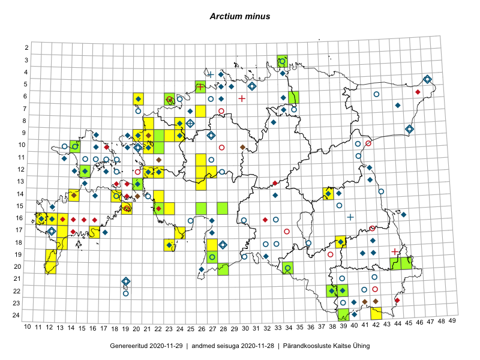

Arctium minus — väike takjas
Asteraceae :: Arctium minus (Hill) Bernh. (234); Arctium minus var. pubens Bab. (7); Lappa minor Hill (2)

Kaart põhineb 253 kirjel:
vaatlusi 137
herbaareksemplare 106
PKÜ kirjeid1 7
ELFi kirjeid2 2
LVA kirjeid3 1
Taime kaasaegsed ja ajaloolised leiukohad asuvad 135 ruudus.
Tingmärgid ja leidudega ruutude arvud periooditi uues (u) ja 2005 andmestikus (v)
| █ | vahemik | u4 | v5 |
|---|---|---|---|
| █ | 2006–2020 | 54 | – |
| ◆/◇ | 1971–2005 | 67 | 81 |
| ○ | 1921–1970 | 43 | 34 |
| + | kuni 1920 | 3 | 4 |
| × | hävinud | – | 0 |
| ? | kaheldav | – | 0 |
| Ruut | Leidja(d) | Leiuaeg | Kirje |
|---|---|---|---|
| 20-34 | Tiit Hallikma | 2020-08-18 | TAA0154566: Arctium minus (Hill) Bernh. |
| 06-20 | Peeter Reiss | 2020-08-07 | LVA: 1708533422 |
| 12-15 | Ott Luuk, Peedu Saar | 2020-08-07 | TAA0154246: Arctium minus (Hill) Bernh. |
| 12-15 | Ott Luuk, Peedu Saar | 2020-08-07 | TAA0154247: Arctium minus (Hill) Bernh. |
| 10-22 | Toomas Kukk, Peedu Saar | 2019-09-19 | TAA0148473: Arctium minus (Hill) Bernh. |
| 10-22 | Toomas Kukk, Peedu Saar | 2019-09-19 | TAA0148474: Arctium minus (Hill) Bernh. |
| 10-22 | Toomas Kukk, Peedu Saar | 2019-09-19 | TAA0148475: Arctium minus (Hill) Bernh. |
| 09-22 | Ott Luuk | 2019-09-04 | TAA0152515: Arctium minus (Hill) Bernh. |
| 20-44 | Taivo Org | 2019-08-20 | TAA0148616: Arctium minus (Hill) Bernh. |
| 20-44 | Taivo Org | 2019-08-20 | TAA0148617: Arctium minus (Hill) Bernh. |
| 20-44 | Taivo Org | 2019-08-20 | TAA0148618: Arctium minus (Hill) Bernh. |
| 16-12 | Mari Reitalu | 2019-07-27 | punkt: Arctium minus (Hill) Bernh. |
| 20-28 | Indrek Tammekänd | 2019-07-19 | TAA0151942: Arctium minus (Hill) Bernh. |
| 22-38 | Peedu Saar, Timo Luhamäe | 2019-07-10 | TAA0149289: Arctium minus (Hill) Bernh. |
| 22-38 | Peedu Saar, Timo Luhamäe | 2019-07-10 | TAA0149288: Arctium minus (Hill) Bernh. |
| 22-39 | Peedu Saar, Timo Luhamäe | 2019-07-10 | TAA0149292: Arctium minus (Hill) Bernh. |
| 22-39 | Peedu Saar, Timo Luhamäe | 2019-07-10 | TAA0149293: Arctium minus (Hill) Bernh. |
| 20-45 | Ott Luuk, Tiit Hallikma | 2019-07-10 | TAA0151492: Arctium minus (Hill) Bernh. |
| 05-26 | Tiit Hallikma | 2019-06-29 | TAA0148363: Arctium minus (Hill) Bernh. |
| 24-39 | Thea Kull | 2019-06-29 | TAA0147941: Arctium minus (Hill) Bernh. |
| 19-27 | Indrek Tammekänd | 2018-07-17 | TAA0147779: Arctium minus (Hill) Bernh. |
| 18-39 | Tiit Hallikma | 2018-07-05 | punkt: Arctium minus (Hill) Bernh. |
| 06-23 | Peedu Saar | 2018-07-05 | TAA0138644: Arctium minus (Hill) Bernh. |
| 12-21 | Mari Reitalu | 2018-07-05 | ruut/ala: Arctium minus (Hill) Bernh. |
| 06-35 | Eerik Leibak | 2017-08-25 | TAA0141827: Arctium minus (Hill) Bernh. |
| 15-28 | Peedu Saar, Timo Luhamäe | 2017-08-11 | TAA0141152: Arctium minus (Hill) Bernh. |
| 18-23 | Mari Reitalu, Sirje Azarov, Ester Valdvee, Triin Reitalu | 2017-07-11–2017-07-13 | ruut/ala: Arctium minus (Hill) Bernh. |
| 18-27 | Indrek Tammekänd | 2016-08-27 | punkt: Arctium minus (Hill) Bernh. |
| 14-18 | Mari Reitalu | 2016-08-15 | ruut/ala: Arctium minus (Hill) Bernh. |
| 15-19 | Mari Reitalu, Triin Reitalu | 2016-08-14 | ruut/ala: Arctium minus (Hill) Bernh. |
| 14-14 | Peedu Saar, Maret Gerz | 2016-08-12 | ruut/ala: Arctium minus (Hill) Bernh. |
| 14-18 | Mari Reitalu, Sirje Azarov | 2016-08-09–2016-08-10 | ruut/ala: Arctium minus (Hill) Bernh. |
| 10-14 | Toomas Kukk, Sander Laherand, Nele Jõessar | 2016-08-09 | TAA0137045: Arctium minus (Hill) Bernh. |
| 10-14 | Toomas Kukk, Sander Laherand, Nele Jõessar | 2016-08-09 | TAA0137046: Arctium minus (Hill) Bernh. |
| 10-14 | Sander Laherand, Toomas Kukk, Nele Jõessar | 2016-08-09 | ruut/ala: Arctium minus (Hill) Bernh. |
| 15-26 | Indrek Tammekänd | 2016-07-31 | TAA0139993: Arctium minus (Hill) Bernh. |
| 20-28 | Aat Sarv, Eerik Leibak | 2016-07-19 | ruut/ala: Arctium minus (Hill) Bernh. |
| 20-28 | Aat Sarv, Eerik Leibak | 2016-07-19 | punkt: Arctium minus (Hill) Bernh. |
| 20-34 | Thea Kull, Eerik Leibak | 2016-07-18 | ruut/ala: Arctium minus (Hill) Bernh. |
| 20-34 | Thea Kull, Eerik Leibak | 2016-07-18 | TAA0139402: Arctium minus (Hill) Bernh. |
| 08-24 | Jaak-Albert Metsoja, Mari Metsoja | 2016-07-08 | ruut/ala: Arctium minus (Hill) Bernh. |
| 09-24 | Jaak-Albert Metsoja, Mari Metsoja | 2016-07-08 | ruut/ala: Arctium minus (Hill) Bernh. |
| 08-21 | Tiit Hallikma, Tõnu Ploompuu | 2016-07-07 | ruut/ala: Arctium minus (Hill) Bernh. |
| 09-21 | Jaak-Albert Metsoja, Mari Metsoja | 2016-07-07 | ruut/ala: Arctium minus (Hill) Bernh. |
| 17-24 | Tiit Hallikma, Tõnu Ploompuu | 2016-07-06 | ruut/ala: Arctium minus (Hill) Bernh. |
| 09-23 | Jaak-Albert Metsoja, Mari Metsoja | 2016-07-06 | ruut/ala: Arctium minus (Hill) Bernh. |
| 09-22 | Jaak-Albert Metsoja, Mari Metsoja | 2016-07-06 | ruut/ala: Arctium minus (Hill) Bernh. |
| 12-27 | Jaak-Albert Metsoja, Mari Metsoja | 2016-07-05 | ruut/ala: Arctium minus (Hill) Bernh. |
| 12-26 | Jaak-Albert Metsoja, Mari Metsoja | 2016-07-05 | ruut/ala: Arctium minus (Hill) Bernh. |
| 15-22 | Meeli Mesipuu, Sirje Azarov | 2016-07-04 | ruut/ala: Arctium minus (Hill) Bernh. |
| 15-22 | Meeli Mesipuu, Sirje Azarov | 2016-07-04 | TAA0137720: Arctium minus (Hill) Bernh. |
| 15-22 | Meeli Mesipuu, Sirje Azarov | 2016-07-04 | TAA0137721: Arctium minus (Hill) Bernh. |
| 14-22 | Mari Reitalu, Oliver Parrest | 2016-07-04 | ruut/ala: Arctium minus (Hill) Bernh. |
| 07-26 | Jaak-Albert Metsoja, Mari Metsoja | 2016-07-04 | ruut/ala: Arctium minus (Hill) Bernh. |
| 06-20 | Jaak-Albert Metsoja, Mari Metsoja | 2016-06-30 | ruut/ala: Arctium minus (Hill) Bernh. |
| 16-13 | Mari Reitalu | 2015-08-29 | ruut/ala: Arctium minus (Hill) Bernh. |
| 12-21 | Ott Luuk, Peedu Saar | 2015-08-28 | PKÜ: 19762 |
| 12-22 | Ott Luuk, Peedu Saar | 2015-08-24 | ruut/ala: Arctium minus (Hill) Bernh. |
| 10-21 | Tõnu Ploompuu | 2015-08-21–2015-08-23 | ruut/ala: Arctium minus (Hill) Bernh. |
| 10-21 | Tõnu Ploompuu | 2015-08-21–2015-08-23 | punkt: Arctium minus (Hill) Bernh. |
| 09-24 | Tõnu Ploompuu, Sirje Lagle | 2015-08-18 | ruut/ala: Arctium minus (Hill) Bernh. |
| 08-24 | Sirje Lagle, Tõnu Ploompuu | 2015-08-18 | ruut/ala: Arctium minus (Hill) Bernh. |
| 19-12 | Oliver Parrest | 2015-08-18 | ruut/ala: Arctium minus (Hill) Bernh. |
| 20-12 | Oliver Parrest | 2015-08-15 | ruut/ala: Arctium minus (Hill) Bernh. |
| 15-23 | Maret Gerz, Leena Gerz | 2015-08-15 | ruut/ala: Arctium minus (Hill) Bernh. |
| 15-22 | Maret Gerz, Leena Gerz | 2015-08-15 | ruut/ala: Arctium minus (Hill) Bernh. |
| 24-42 | Peedu Saar, Ott Luuk | 2015-08-13 | punkt: Arctium minus (Hill) Bernh. |
| 24-42 | Peedu Saar, Ott Luuk | 2015-08-13 | ruut/ala: Arctium minus (Hill) Bernh. |
| 17-16 | Sirje Azarov, Aira Alasi | 2015-08-12 | ruut/ala: Arctium minus (Hill) Bernh. |
| 17-13 | Mari Reitalu, Oliver Parrest | 2015-08-12 | ruut/ala: Arctium minus (Hill) Bernh. |
| 17-24 | Maret Gerz, Leena Gerz | 2015-08-12 | ruut/ala: Arctium minus (Hill) Bernh. |
| 17-24 | Maret Gerz, Leena Gerz | 2015-08-12 | punkt: Arctium minus (Hill) Bernh. |
| 16-11 | Triin Reitalu, Mari Reitalu | 2015-08-09–2015-08-10 | ruut/ala: Arctium minus (Hill) Bernh. |
| 16-11 | Mari Reitalu, Triin Reitalu | 2015-08-09–2015-08-10 | ruut/ala: Arctium minus (Hill) Bernh. |
| 14-38 | Thea Kull | 2015-08-07 | ruut/ala: Arctium minus (Hill) Bernh. |
| 11-26 | Hanna-Eliisa Luts, Tõnu Ploompuu | 2015-07-28 | ruut/ala: Arctium minus (Hill) Bernh. |
| 16-13 | Mari Reitalu, Oliver Parrest | 2015-07-27 | ruut/ala: Arctium minus (Hill) Bernh. |
| 18-13 | Oliver Parrest | 2015-07-15 | ruut/ala: Arctium minus (Hill) Bernh. |
| 13-20 | Meeli Mesipuu | 2015-07-13 | TAA0140873: Arctium minus (Hill) Bernh. |
| 13-26 | Toomas Kukk, Thea Kull, Timo Luhamäe, Ott Luuk, Peedu Saar | 2015-06-28 | ruut/ala: Arctium minus (Hill) Bernh. |
| 09-20 | Kadi-Liis Kesler | 2015-06-25–2015-10-11 | ruut/ala: Arctium minus (Hill) Bernh. |
| 10-22 | Toomas Kukk | 2014-08-21 | TAA0113293: Arctium minus (Hill) Bernh. |
| 10-22 | Toomas Kukk | 2014-08-21 | TAA0113294: Arctium minus (Hill) Bernh. |
| 10-22 | Toomas Kukk | 2014-08-21 | TAA0113295: Arctium minus (Hill) Bernh. |
| 16-13 | Mari Reitalu | 2010-10-01 | ELF: 17136 |
| 03-34 | Ott Luuk | 2008-07-30 | TAA0076883: Arctium minus (Hill) Bernh. |
| 03-34 | Ott Luuk | 2008-07-30 | TAA0076884: Arctium minus (Hill) Bernh. |
| 17-27 | Vilma Kuusk | 2005 | ruut/ala: Arctium minus (Hill) Bernh. |
| 09-27 | Tõnu Ploompuu | 2005 | ruut/ala: Arctium minus (Hill) Bernh. |
| 05-31 | Urmas Laansoo | 2001-08-18 | TALL C009326: Arctium minus (Hill) Bernh. |
| 10-30 | Meeli Mesipuu, Katrin Jürgens | 2001-08-17 | PKÜ: 7253 |
| 05-29 | Tõnu Ploompuu, Urmas Laansoo | 2001 | punkt: Arctium minus (Hill) Bernh. |
| 09-21 | Tõnu Ploompuu | 2000-10-01 | PKÜ: 2829 |
| 23-41;23-42 | Ülle Reier, Priit Holtsmann | 2000-08-09 | PKÜ: 6843 |
| 06-28 | Toomas Kukk | 2000-08-03 | ruut/ala: Arctium minus (Hill) Bernh. |
| 11-22 | Toomas Kukk, Bert Holm | 2000-06-09 | PKÜ: 2219 |
| 14-14 | Mari Reitalu, Tõnu Talvi | 1999-10-20 | PKÜ: 1259 |
| 05-29 | Tõnu Ploompuu | 1999-07-29 | TALL C003940: Arctium minus (Hill) Bernh. |
| 16-12;17-12 | Mare Leis, Anneli Tamm, Priit Holtsmann | 1999-07-29 | PKÜ: 1510 |
| 14-16 | Peeter Tarlap | 1999-07-28 | TALL C003941: Arctium minus (Hill) Bernh. |
| 09-27 | H. Aasamaa | 1999-07-01 | TAM0073347: Arctium minus (Hill) Bernh. |
| 09-24 | Tõnu Ploompuu | 1999–2003 | ruut/ala: Arctium minus (Hill) Bernh. |
| 14-38 | 1998-09-10 | ruut/ala: Arctium minus (Hill) Bernh. | |
| 06-20 | Toomas Kukk, Vilma Kuusk | 1998-07-29 | ruut/ala: Arctium minus (Hill) Bernh. |
| 06-20 | Toomas Kukk, Vilma Kuusk | 1998-07-27–1998-07-30 | ruut/ala: Arctium minus (Hill) Bernh. |
| 17-17 | Toomas Kukk, Marek Sammul, Heikki Luhamaa, Liis Kärme | 1998-07-24–1998-08-20 | ruut/ala: Arctium minus (Hill) Bernh. |
| 07-34 | Tõnu Ploompuu | 1998 | ruut/ala: Arctium minus (Hill) Bernh. |
| 06-34 | Tõnu Ploompuu | 1998 | ruut/ala: Arctium minus (Hill) Bernh. |
| 22-39 | Tiiu Kull | 1998 | ruut/ala: Arctium minus (Hill) Bernh. |
| 15-12 | Liis Kärme | 1997-07-08 | TAA0005139: Arctium minus (Hill) Bernh. |
| 09-27 | Heinrich Aasamaa | 1996-08-24 | TAM0135969: Arctium minus (Hill) Bernh. |
| 09-27 | H. Aasamaa | 1996-08-24 | TAM0069051: Arctium minus (Hill) Bernh. |
| 09-27 | H. Aasamaa | 1996-07-27 | TAM0073346: Arctium minus (Hill) Bernh. |
| 09-27 | H. Aasamaa | 1996-07-27 | TAM0126390: Arctium minus (Hill) Bernh. |
| 18-23 | U. Laansoo | 1995 | ruut/ala: Arctium minus (Hill) Bernh. |
| 09-19 | Toomas Kukk, Elle Roosaluste, Mare Leis | 1993-08-21–1998-09-22 | ruut/ala: Arctium minus (Hill) Bernh. |
| 14-20 | Urmas Tokko | 1993-07-29 | ELF: 1483 |
| 09-20 | Toomas Kukk, Elle Roosaluste, Mare Leis | 1993-07-17–1998-09-20 | ruut/ala: Arctium minus (Hill) Bernh. |
| 09-20 | Toomas Kukk, Elle Roosaluste, Mare Leis | 1993-07-17–1998-09-20 | ruut/ala: Arctium minus (Hill) Bernh. |
| 10-20 | Toomas Kukk, Elle Roosaluste | 1993-07-16–1994-07-13 | ruut/ala: Arctium minus (Hill) Bernh. |
| 10-20 | Toomas Kukk, Elle Roosaluste | 1993-07-16–1994-05-24 | ruut/ala: Arctium minus (Hill) Bernh. |
| 10-19 | Toomas Kukk, Elle Roosaluste | 1993-07-15–1994-08-17 | ruut/ala: Arctium minus (Hill) Bernh. |
| 10-19 | Toomas Kukk, Elle Roosaluste, Mare Leis | 1993-07-11–1998-09-21 | ruut/ala: Arctium minus (Hill) Bernh. |
| 10-19 | Toomas Kukk, Elle Roosaluste, Mare Leis | 1993-06–1998-09-21 | ruut/ala: Arctium minus (Hill) Bernh. |
| 05-28 | Toomas Kukk | 1992-07-27 | ruut/ala: Arctium minus (Hill) Bernh. |
| 09-27 | H. Aasamaa | 1992-07-27 | TAM0073308: Arctium minus (Hill) Bernh. |
| 22-39 | Toomas Kukk, Kalevi Kull | 1992 | ruut/ala: Arctium minus (Hill) Bernh. |
| 22-39 | Tiiu Kull, Kalevi Kull | 1990 | ruut/ala: Arctium minus (Hill) Bernh. |
| 16-11 | U. Laansoo | 1989-07-10 | TALL C000781: Arctium minus (Hill) Bernh. |
| 15-12 | Mari Reitalu | 1989–1999 | ruut/ala: Arctium minus (Hill) Bernh. |
| 05-28 | Toomas Kukk | 1987-08-25 | TAA0005155: Arctium minus (Hill) Bernh. |
| 05-28 | Toomas Kukk | 1987-08-25 | TAA0005156: Arctium minus (Hill) Bernh. |
| 08-24 | H. Krall, M. Leht, A. Saare | 1986-07-23 | ruut/ala: Arctium minus (Hill) Bernh. |
| 07-25 | N. Ingerpuu, H. Krall, L. Kannuke | 1986-07-18 | ruut/ala: Arctium minus (Hill) Bernh. |
| 08-25 | Urve Kallavus, Malle Leht, Lauri Leht | 1986-07-17 | ruut/ala: Arctium minus (Hill) Bernh. |
| 07-45 | Vilma Kuusk | 1985-09-16 | ruut/ala: Arctium minus (Hill) Bernh. |
| 05-28 | Toomas Kukk | 1985–1989 | ruut/ala: Arctium minus (Hill) Bernh. |
| 12-42 | E. Krall | 1984-08-24 | ruut/ala: Arctium minus (Hill) Bernh. |
| 18-39 | Heljo Krall | 1984-08-21 | ruut/ala: Arctium minus (Hill) Bernh. |
| 14-39 | Heljo Krall | 1984-08-17 | ruut/ala: Arctium minus (Hill) Bernh. |
| 24-40 | M. Leht, M. Abakumova | 1984-08-14 | ruut/ala: Arctium minus (Hill) Bernh. |
| 23-40 | M. Leht, M. Abakumova | 1984-08-13 | ruut/ala: Arctium minus (Hill) Bernh. |
| 13-42 | E. Krall | 1984-08-10–1984-08-22 | ruut/ala: Arctium minus (Hill) Bernh. |
| 14-16 | Heljo Krall, Tiiu Kull, Kalevi Kull, Vilma Kuusk, Maria Abakumova, Linda Viljasoo, A. Saare | 1984-06-28–1985-08-06 | ruut/ala: Arctium minus (Hill) Bernh. |
| 12-15 | Taavi Tuulik | 1984–1986 | ruut/ala: Arctium minus (Hill) Bernh. |
| 19-42 | Maret Kask, Linda Viljasoo | 1983-07-24 | ruut/ala: Arctium minus (Hill) Bernh. |
| 10-21 | 1983-07-07–1983-07-11 | ruut/ala: Arctium minus (Hill) Bernh. | |
| 13-20 | H.-E. Rebassoo | 1983-06-28 | ruut/ala: Arctium minus (Hill) Bernh. |
| 16-27 | M. Kask, L. Viljasoo | 1982-08 | ruut/ala: Arctium minus (Hill) Bernh. |
| 16-45 | Maret Kask, Linda Viljasoo | 1982-07-27 | ruut/ala: Arctium minus (Hill) Bernh. |
| 16-45 | M. Kask | 1982-07-27 | TAA0005153: Arctium minus (Hill) Bernh. |
| 19-32 | Vilma Kuusk | 1982-07-17 | ruut/ala: Arctium minus (Hill) Bernh. |
| 05-48 | Malle Leht | 1982-07-10 | TAA0005157: Arctium minus (Hill) Bernh. |
| 18-28 | 1982-07-04–1982-07-30 | ruut/ala: Arctium minus (Hill) Bernh. | |
| 09-46 | Heljo Krall, Malle Leht | 1981-09-07 | ruut/ala: Arctium minus (Hill) Bernh. |
| 18-42 | Maret Kask, Linda Viljasoo | 1981-08-13 | ruut/ala: Arctium minus (Hill) Bernh. |
| 14-33 | H. Krall | 1981-07-17–1981-07-18 | ruut/ala: Arctium minus (Hill) Bernh. |
| 14-33 | 1981-07-17 | ruut/ala: Arctium minus (Hill) Bernh. | |
| 08-33 | Heljo Krall | 1981-07-14 | ruut/ala: Arctium minus (Hill) Bernh. |
| 19-41 | L. Viljasoo | 1980-08-29 | TAA0005125: Arctium minus (Hill) Bernh. |
| 20-26 | Tiiu Kull, Kalevi Kull | 1980-07–1986-08 | ruut/ala: Arctium minus (Hill) Bernh. |
| 12-21 | H. Krall | 1980-06–1980-07 | ruut/ala: Arctium minus (Hill) Bernh. |
| 13-15 | Taavi Tuulik | 1980–2000 | ruut/ala: Arctium minus (Hill) Bernh. |
| 12-17 | Taavi Tuulik | 1980–2000 | ruut/ala: Arctium minus (Hill) Bernh. |
| 12-14 | Taavi Tuulik | 1980–2000 | ruut/ala: Arctium minus (Hill) Bernh. |
| 11-13 | Taavi Tuulik | 1980–2000 | ruut/ala: Arctium minus (Hill) Bernh. |
| 10-16 | Taavi Tuulik | 1980–2000 | ruut/ala: Arctium minus (Hill) Bernh. |
| 09-16 | Taavi Tuulik | 1980–2000 | ruut/ala: Arctium minus (Hill) Bernh. |
| 04-34 | Maret Kask, Vilma Kuusk, Ulve Pihlik, Linda Viljasoo | 1980 | ruut/ala: Arctium minus (Hill) Bernh. |
| 13-20 | H.-E. Rebassoo | 1979-07-12 | ruut/ala: Arctium minus (Hill) Bernh. |
| 21-19 | Haide-Ene Rebassoo | 1979-07-02–1979-07-05 | ruut/ala: Arctium minus (Hill) Bernh. |
| 12-22 | H. Krall | 1979–1980 | ruut/ala: Arctium minus (Hill) Bernh. |
| 18-42 | Maret Kask, Linda Viljasoo | 1978–1979 | ruut/ala: Arctium minus (Hill) Bernh. |
| 22-38 | M. Kask, L. Viljasoo | 1977-06 | ruut/ala: Arctium minus (Hill) Bernh. |
| 09-19 | Liivia Laasimer | 1975 | ruut/ala: Arctium minus (Hill) Bernh. |
| 04-28 | Maret Kask, Linda Viljasoo | 1973-08 | ruut/ala: Arctium minus (Hill) Bernh. |
| 13-20 | H.-E. Rebassoo | 1973-06-19 | ruut/ala: Arctium minus (Hill) Bernh. |
| 13-20 | H.-E. Rebassoo | 1973-06-19 | ruut/ala: Arctium minus (Hill) Bernh. |
| 05-48 | L. Viljasoo | 1972-08-15 | TAA0005154: Arctium minus (Hill) Bernh. |
| 16-12 | Mari Reitalu | 1971–2005 | ruut/ala: Arctium minus (Hill) Bernh. |
| 05-48 | Maret Kask, Linda Viljasoo | 1971–1973 | ruut/ala: Arctium minus (Hill) Bernh. |
| 17-12 | M. Reitalu | 1971 | ruut/ala: Arctium minus (Hill) Bernh. |
| 11-18 | botaaniline ekspeditsioon ZBI | 1970 | ruut/ala: Arctium minus (Hill) Bernh. |
| 21-42 | Maret Kask | 1967-08-03 | TAA0005162: Arctium minus (Hill) Bernh. |
| 21-42 | Maret Kask | 1967-08-03 | TAA0005163: Arctium minus (Hill) Bernh. |
| 20-34 | M. Kask | 1965-08-28 | TAA0005130: Arctium minus (Hill) Bernh. |
| 14-43 | V. Hein, V. Puusepp | 1964-07-31 | TAA0005126: Arctium minus (Hill) Bernh. |
| 12-28 | Maret Kask | 1964-07-06 | TAA0005167: Arctium minus var. pubens Bab. |
| 12-28 | Maret Kask | 1964-07-06 | TAA0005168: Arctium minus var. pubens Bab. |
| 12-28 | Maret Kask | 1964-07-06 | TAA0005169: Arctium minus var. pubens Bab. |
| 14-18 | L. Viljasoo | 1964-07-06 | TAA0005127: Arctium minus (Hill) Bernh. |
| 11-27 | Maret Kask | 1964-07-05 | TAA0005178: Arctium minus var. pubens Bab. |
| 11-27 | Maret Kask | 1964-07-05 | TAA0005177: Arctium minus var. pubens Bab. |
| 11-27 | Maret Kask | 1964-07-05 | TAA0005179: Arctium minus var. pubens Bab. |
| 10-41 | A. Ojaveer, V. Puusepp | 1963-07-02 | TAA0005152: Arctium minus (Hill) Bernh. |
| 16-25 | Vilma Kuusk | 1962-08-01 | TAA0005171: Arctium minus (Hill) Bernh. |
| 06-43 | V. Puusepp | 1961-07-01 | TAA0005151: Arctium minus (Hill) Bernh. |
| 06-24 | H. Ting, T. Piin | 1960-08-09 | TAA0005164: Arctium minus (Hill) Bernh. |
| 17-12 | Haide-Ene Rebassoo | 1960-07-18 | TU263233a: Arctium minus (Hill) Bernh. |
| 17-12 | Haide-Ene Rebassoo | 1960-07-18 | TU263234: Arctium minus (Hill) Bernh. |
| 17-12 | Haide-Ene Rebassoo | 1960-07-18 | TU263233b: Arctium minus (Hill) Bernh. |
| 17-12 | Haide-Ene Rebassoo | 1960-07-18 | TU263233c: Arctium minus (Hill) Bernh. |
| 10-20 | Albert Üksip, S. Talts, L. Viljasoo | 1960-07-15 | TAA0005128: Arctium minus (Hill) Bernh. |
| 10-20 | A. Üksip, S. Talts, L. Viljasoo | 1960-07-15 | TAA0005147: Arctium minus (Hill) Bernh. |
| 10-20 | A. Üksip, S. Talts, L. Viljasoo | 1960-07-15 | TAA0005148: Arctium minus (Hill) Bernh. |
| 16-30 | M. Kask | 1959-08-12 | ruut/ala: Arctium minus (Hill) Bernh. |
| 18-33 | Maret Kask | 1959-08-06 | ruut/ala: Arctium minus (Hill) Bernh. |
| 18-33 | Maret Kask | 1959-07-31 | TAA0005149: Arctium minus (Hill) Bernh. |
| 18-33 | Maret Kask | 1959-07-31 | TAA0005150: Arctium minus (Hill) Bernh. |
| 18-32 | Maret Kask | 1959-06-12–1959-08-04 | ruut/ala: Arctium minus (Hill) Bernh. |
| 03-34 | P. Põldmaa | 1958-10-29 | TAA0005129: Arctium minus (Hill) Bernh. |
| 07-35 | E. Tammemägi | 1958-08-04 | TAA0005170: Arctium minus (Hill) Bernh. |
| 19-30 | Visolde Puusepp, Alma Saare | 1958-07-20 | TAA0005158: Arctium minus var. pubens Bab. |
| 19-30 | Visolde Puusepp, Alma Saare | 1958-07-20 | TAA0005159: Arctium minus (Hill) Bernh. |
| 19-27 | S. Talts | 1958-07-17 | TAA0005166: Arctium minus (Hill) Bernh. |
| 21-39 | Maret Kask | 1957-08-14 | TAA0005165: Arctium minus (Hill) Bernh. |
| 22-41 | L. Viljasoo | 1957-08-05 | TAA0005142: Arctium minus (Hill) Bernh. |
| 22-41 | L. Viljasoo | 1957-08-05 | TAA0005143: Arctium minus (Hill) Bernh. |
| 23-39 | L. Viljasoo, A. Saare | 1957-07-31 | TAA0005140: Arctium minus (Hill) Bernh. |
| 23-39 | L. Viljasoo, A. Saare | 1957-07-31 | TAA0005141: Arctium minus (Hill) Bernh. |
| 10-13 | Haide-Ene Rebassoo | 1957–1984 | ruut/ala: Arctium minus (Hill) Bernh. |
| 10-14 | Haide-Ene Rebassoo | 1957–1984 | ruut/ala: Arctium minus (Hill) Bernh. |
| 11-15 | Haide-Ene Rebassoo | 1957–1984 | ruut/ala: Arctium minus (Hill) Bernh. |
| 11-16 | Haide-Ene Rebassoo | 1957–1984 | ruut/ala: Arctium minus (Hill) Bernh. |
| 11-17 | Haide-Ene Rebassoo | 1957–1984 | ruut/ala: Arctium minus (Hill) Bernh. |
| 12-18 | Haide-Ene Rebassoo | 1957–1984 | ruut/ala: Arctium minus (Hill) Bernh. |
| 16-33 | 1957–1983 | ruut/ala: Arctium minus (Hill) Bernh. | |
| 12-18 | H. Rebassoo | 1957–1972 | ruut/ala: Arctium minus (Hill) Bernh. |
| 11-41 | Gustav Vilbaste | 1939-07-05 | TAA0005175: Arctium minus (Hill) Bernh. |
| 09-27 | H. Hendrikson | 1935-08-29 | TAM0018779: Arctium minus (Hill) Bernh. |
| 06-27 | H. Aasamaa | 1935-08-20 | TAM0119530: Arctium minus (Hill) Bernh. |
| 18-28 | S. Talts | 1935-07-27 | TAA0005124: Arctium minus (Hill) Bernh. |
| 07-20 | O. Eklund | 1935-07–1935-08 | ruut/ala: Arctium minus (Hill) Bernh. |
| 07-20 | Gustav Vilbaste | 1934-07-11 | TAA0005176: Arctium minus (Hill) Bernh. |
| 18-36 | Gustav Vilbaste | 1933-07-29 | TAA0005134: Arctium minus (Hill) Bernh. |
| 14-21 | Gustav Vilbaste | 1933-07-16 | TAA0005137: Arctium minus (Hill) Bernh. |
| 15-39 | Hugo Salasoo | 1932-08-07 | TAM0005450: Arctium minus (Hill) Bernh. |
| 21-19 | Gustav Vilbaste | 1932-07-24 | TAA0005133: Arctium minus (Hill) Bernh. |
| 22-19 | Gustav Vilbaste | 1932-07-22 | TAA0005173: Arctium minus (Hill) Bernh. |
| 22-19 | Gustav Vilbaste | 1932-07-19 | TAA0005172: Arctium minus (Hill) Bernh. |
| 21-19 | Gustav Vilbaste | 1932-07-17 | TAA0005132: Arctium minus (Hill) Bernh. |
| 10-20 | Gustav Vilbaste | 1931-08-01 | TAA0005136: Arctium minus (Hill) Bernh. |
| 07-20 | Gustav Vilbaste | 1930–1939 | ruut/ala: Arctium minus (Hill) Bernh. |
| 05-48 | Gustav Vilbaste | 1929-08-18 | TAA0005131: Arctium minus (Hill) Bernh. |
| 18-28 | J. Talts | 1929-08-05 | TAA0005160: Arctium minus (Hill) Bernh. |
| 18-28 | J. Talts | 1929-08-05 | TAA0005161: Arctium minus (Hill) Bernh. |
| 09-46 | Gustav Vilbaste | 1929-07-17 | TAA0005174: Arctium minus (Hill) Bernh. |
| 21-19 | Julius Gröntved | 1929 | ruut/ala: Arctium minus (Hill) Bernh. |
| 05-31 | E. Vilberg | 1923-08-26 | TAM0005451: Arctium minus (Hill) Bernh. |
| 05-31 | E. Vilbaste | 1923-08-26 | TAA0005135: Arctium minus (Hill) Bernh. |
| 04-27 | G. Pahnsch | 1861-07-22 | TAM0125183: Lappa minor Hill |
| 16-40 | Glehn | 1860–1938 | ruut/ala: Arctium minus (Hill) Bernh. |
| 08-25 | Weber | TAM0125179: Lappa minor Hill |
Pärandkoosluste Kaitse Ühingu (PKÜ) andmebaas sisaldab inventeeritud koosluste kirjeldusi ja liigiloendeid. Kõige enam on andmeid niidutaimede kohta.↩︎
Eestimaa Looduse Fondi (ELF) andmebaas sisaldab inventeeritud koosluste kirjeldusi ja liigiloendeid. Eriti rohkesti on andmeid märgalade kohta.↩︎
Loodusvaatluste andmebaas. https://lva.eelis.ee, väljavõte seisuga 19.10.2020↩︎
Ruutude arv uue atlase andmekogu järgi. Muuhulgas arvestab vanemat herbaariumi, 2005. aasta atlase välitöölehtedelt uuesti digitaliseeritud andmeid jne. Uue atlase andmekogust pärinevad andmed on kaardile kantud siniste sümbolitega.↩︎
Ruutude arv 2005. aasta atlase (Kukk, T., Kull, T., Eesti taimede levikuatlas. Eesti Maaülikool, Põllumajandus- ja Keskkonnainstituut, Tartu, 2005) järgi. Andmeallikana on kasutatud levik.exe programmi, kus igas ruudus on registreeritud vaid uusim leid. Seetõttu on vanemate perioodide kohta andmed puudulikud. Kasutatud levik.exe andmestikus leidub mõningaid kõrvalekaldeid atlase trükis ilmunud versioonist, sagedamini tarnade ja käpaliste seas. Lisaks leidub selles andmestikus valik liike (peamiselt väheste leidudega tulnuktaimed), mille kaarte trükis ei avaldatud. Vana atlase andmed ruutudest, milles ei ole uue atlase andmekogus leide enne 2006. aastat, on kaardil esitatud punaste sümbolitega. Vana atlase andmetel hävinud ja kaheldavaid leiukohti pole hilisemate (taas)leidude põhjal korrigeeritud.↩︎